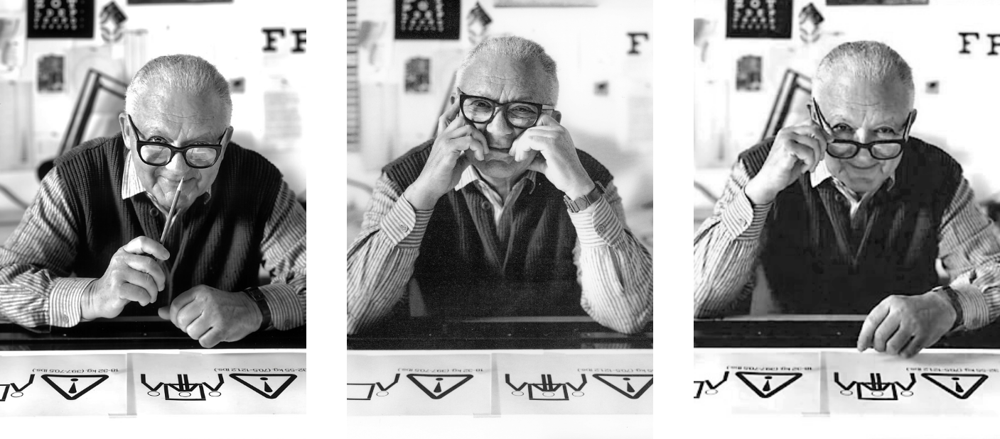
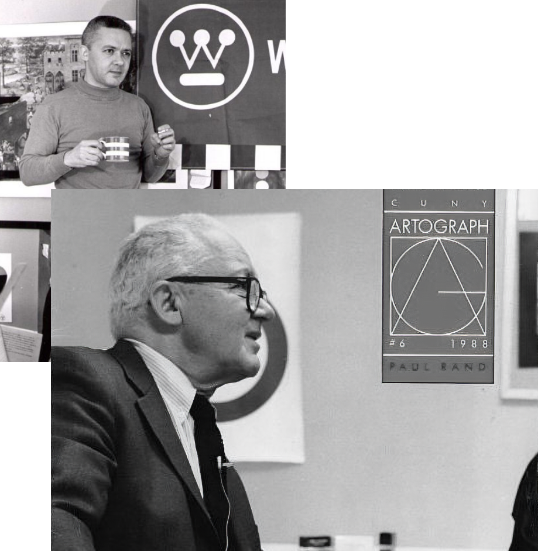
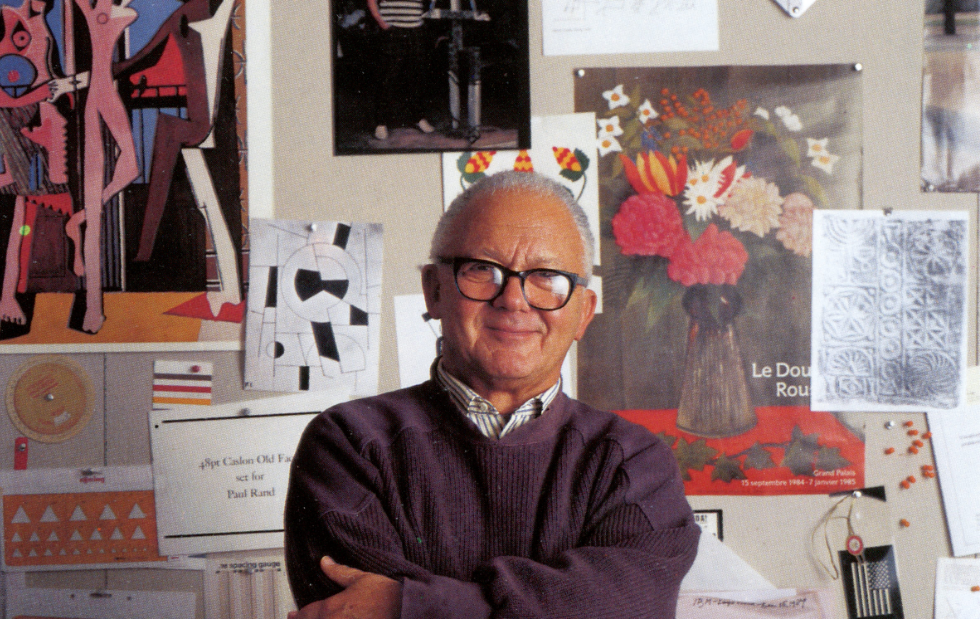

PAUL RAND
LIFE STORY
DESIGN
WISE SAYING
미국 그래픽 디자이너
USA Graphic Designer
1914/8/15 ~ 1996/11/26


PAUL RAND
그는 누구인가?
1914년 뉴욕의 브룩클린(Brooklyn)에서 태어났다. 그는
브룩클린의 라운드빌에서 누나 한명과 쌍둥이 남자형제와
함께 자랐다. 비엔나 출신 이주민의 아들로서, 매우 가난하
고 엄격한 정통 유대교 가정에서 성장하였다.

그의 외모는 곱슬머리에 험상궂은
얼굴을 하고 있었으며 작고 왜소했다.
그는 시력이 굉장히 나빠서 검은색
뿔테안경을 쓰고 있었는데 자주 눈을
깜빡여서 닉네임이 Blinkly였다.
그는 늘 검은색 니트타이(그의 트레이드 마크)와
붉은색 셔츠를 즐겨 입었다.
그의 시력은 나빴지만 그의 눈은 어딘가를
응시하면서 영감을 찾는 듯한 호기심 어리고
분석적인 강한 모습이었다.